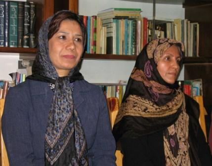
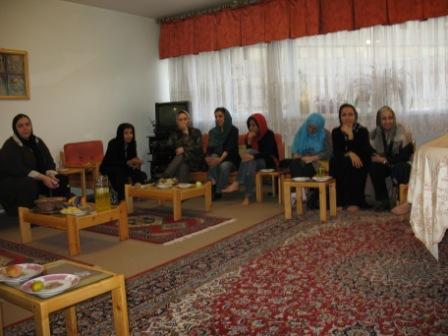
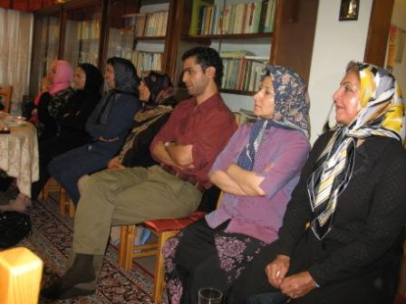
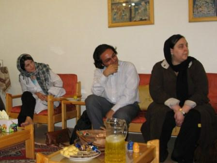

پذيرش > اخبار > دیدار وکلا و فعالان کمپین یک میلیون امضا با خانواده عبدالفتاح سلطانی/ خانم دهقان: جای (...)

 دیدار وکلا و فعالان کمپین یک میلیون امضا با خانواده عبدالفتاح سلطانی/ خانم دهقان: جای تاسف است که از وکیلی بخواهند مدافع حقوق بشر نباشد دیدار وکلا و فعالان کمپین یک میلیون امضا با خانواده عبدالفتاح سلطانی/ خانم دهقان: جای تاسف است که از وکیلی بخواهند مدافع حقوق بشر نباشد
21 مرداد 1388 - - نسخه قابل چاپ
دهقان، همسر عبدالفتاح سلطانی: جای تاسف است که از وکیلی بخواهند مدافع حقوق بشر نباشد
تغییر برای برابری - با گذشت نزدیک به دو ماه عبدالفتاح سلطانی حقوق دان و از وکلای کانون مدافعان حقوق بشر همچنان به طور غیرقانونی در بازداشت به سر می برد و حتی اجازه حضور در مراسم خاکسپاری خواهرش نیز به او داده نشده است. این در حالی است که به گفته ی خانم دهقان همسر این مدافع حقوق بشر او را تحت فشار گذاشته اند که همکاری خود با کانون مدافعان حقوق بشر و شیرین عبادی را قطع کند.
روز گذشته، 20 مرداد ماه، مردادماه جمعی از وکلا و فعالان کمپین یک میلیون امضا و جنبش زنان و برخی موکلان آقای سلطانی با خانواده وی دیدار کردند. در این دیدار خانم دهقان گفت: خیلی از ما این شانس را داریم که حداقل از وضعیت زندانی خود خبرداریم اما در عین حال شاهدیم که بسیاری از خانواده های بازداشت شدگان اتفاقات اخیر تا به حال نتوانسته اند با فرزند یا همسر خود دیدار کرده و یا در بی خبری کامل از عزیزان خود به سر می برند و این افراد وضعیت نگران کننده ای دارند.

دهقان درباره آخرین وضعیت آقای سلطانی با اشاره به آخرین ملاقات خود با همسرش گفت: مدتی است که آقای سلطانی را از بند 240 به بند 209 زندان اوین منتقل کرده اند. از ماه دوم اجازه ملاقات دادند و تا به حال 4 بار با ایشان ملاقات داشته ایم. در آخرین دیدار متوجه شدیم که ایشان از درد پا نمی توانند درست حرکت کنند. او از بند 240 چیزی نمی گوید ولی ظاهرا در این بند وضعیت بهتری دارد. آقای سلطانی گفت که پول می دهند و برایشان روزنامه های کیهان و اطلاعات می خرند.
او درباره دلایل ممانعت از حضور آقای سلطانی در مراسم ختم خواهرش گفت: به ایشان اجازه حضور در مراسم خاکسپاری را ندادند. در راه بازگشت از بهشت زهرا فردی تماس گرفت و گفت اگر شما به آقای سلطانی بگویید با شیرین عبادی همکاری نکند و از کانون مدافعان بیرون بیاید وی را ازاد می کنم و بعد هر کاری دوست دارد انجام دهد حتی از رئیس جمهور شکایت کند. ما حکم ارتداد شیرین عبادی را گرفته ایم و بهتر است شما اینقدر سنگ او را به سینه نزنید. من در جواب گفتم ایشان خودشان عاقل و بالغ هستند و می توانند در این مورد تصمیم بگیرند. به هر حال با درخواست مکرر من و همچنین وکلای ایشان از جمله فریده غیرت، به ایشان اجازه ی حضور در مراسم ختم هم داده نشد.
وی در ادامه افزود: آقای سلطانی از ابتدا به نحوه دستگیری و تفتیش غیر قانونی دفترش که بدون حکم بود اعتراض داشت. تفهیم اتهام ایشان 27 ساعت طول کشید، در صورتی که باید طرف 24 ساعت تفهیم اتهام می شد و سر انجام نیز مواد 500 و 610 را به ایشان تفهیم اتهام کردند. تا به حال 4 بار بازجویی شدند و ایشان در تمام این مدت به دلیل آن که اساس دستگیری خود را غیر قانونی می داند سکوت کرده است. ایشان به نحوه ی زندانی شدن و همچنین استفاده از چشم بند و لباس زندان اعتراض دارد و من هم شکایت نامه ای را به هیأت نظارت بر حقوق شهروندی ارائه دادم.

درحال حاضر فریده غیرت، علیرضا طباطبایی، مهناز پراکند، نجوا رحمانی از وکلای آقای سلطانی هستند اما تا به حال اجازه ملاقات را به هیچ یک از وکلا نداده اند. در حالی که طبق قانون متهم حق دارد در دادسرا وکیل داشته باشند تا در صورت تحقیقات غیرقانونی از جمله پرسیدن سوالات القایی یا بی ارتباط به موضوع پرونده حق اعتراض داشته باشند.
مهناز پراکند یکی از وکلای مدافع عبدالفتاح سلطانی در پاسخ به این سوال که اکنون پرونده آقای سلطانی دست چه کسی هست گفت: به دلیل اینکه پیشتر اقای سلطانی از اقایان راسخ، حداد و سبحانی شکایت کرده اند ایشان صلاحیت رسیدگی به پرونده و صدور رای را ندارند. پرونده ایشان به اقای حیدری فر ارجاع شده بود اما چنانچه از شواهد امر بر می آید پس از تفهیم اتهام آقای حداد به پرونده ی ایشان رسیدگی می کنند و ایشان اعلام کردند که در دیداری که با آقای سلطانی داشته اند به او گفته اند در صورتی که از همکاری با کانون مدافعان و خانم شیرین عبادی دست بردارد آزاد خواهد شد و در غیر این صورت باید در زندان بمانند.
وی درمورد اعتراض به قرار بازداشت گفت : براساس قانون متهم می تواند به قرار بازداشت موقت خود اعتراض کند و در صورت برخورداری از حقوق قانونی از جمله داشتن وکیل مدافع دلایل این اعتراض به صورت مکتوب به اطلاع دادگاه می رسد. اگر دادگاه دلایل ذکر شده را وارد دانست با تبدیل قرار بازداشت موقت او را آزاد می کند و در غیر این صورت قرار بازداشت موقت مجددا تمدید خواهد شد. این در حالی است که این حق در مورد هیچ یک از متهمین کنونی رعایت نمی شود.

در این دیدار نسرین ستوده نیز از تقدیم شکواییه ای از سوی وکلا به هیأت نظارت بر حقوق شهروندی خبر داد: چند نفر آقای سلطانی را صدا کرده و از دفتر بیرون می برند و کپی قراری را با این مضمون که «به ضابطین قضایی اجازه داده می شود با اغتشاشگران برخورد کنند» به او نشان می دهند و این حکم مبنای بازداشت آقای سلطانی قرار می گیرد. بر همین اساس، ما شکواییه ای را از طرف برخی از وکلا به هیئت نظارت بر حقوق شهروندی ارائه دادیم.
یکی از حاضران اظهار داشت: روز کارگر وقتی تعدادی از فعالین بازداشت شدند همسرانشان بسیار نگران بودند. از زمانی که به دفتر آقای سلطانی مراجعه کردند انگار که عزیزانشان آزاد شده باشند خیالشان راحت شد و همه ی این آرامش مرهون آگاهی بود که آقای سلطانی به آنها می دادند و متوجه شده بودند که اتهام سنگینی متوجه ی همسران و فرزندانشان نیست و به همین دلیل بحران پیش آمده را راحت تر تحمل کردند. همه ی این افراد بارها گفته اند که مدیون آقای سلطانی هستند.
در دیدار با خانواده آقای سلطانی علاوه بر همسر، فرزندان و خواهر آقای سلطانی، حضور داشتند. زهره ارزنی گفت اگر خانم دهقان در کنار آقای سلطانی نبودند ایشان نمی توانستند به راحتی و با آسایش خاطر فعالیت کنند و در اختیار افرادی باشند که به دفاع ایشان احتیاج دارند. این نقش مادراست که از وارد شدن فشار به اعضای خانواده جلوگیری می کند و خانم سلطانی به خوبی از عهده این کار برامده اند.

همسر عبدالفتاح سلطانی در پایان این دیدار گفت: همه باید بدانند گناه ایشان این است که از موکلین خود به خوبی دفاع می کنند. کار وکیل مثل کار پزشک است. وقتی پزشک میخواهد کسی را جراحی کند نمی پرسد که این بیمار چه دینی دارد اهل کجاست یا چقدر پول دارد. ایشان هم کارشان را به همین نحو انجام می داد. من در تمام این مدت تاکید کرده ام که ایشان قسم خورده بود و به قسم خود ادای دین می کرد. در میان موکلین آقای سلطانی از همه گروه ها اعم از کارگر، معلم، بهایی، شیعه، مالی، غیر مالی و آدم های عادی هم بودند. واقعا جای تاسف است که از وکیلی بخواهند مدافع حقوق بشر نباشد و از او بخواهند که موکلان خود را دسته بندی کنند و ایشان دارند تاوان این کار خود را می دهند. من به راه ایشان باور دارم و شاید نتوانستم کمک چندانی در این راه باشم اما هرگز مانع او نشدم. به اندازه ی سر سوزنی شک ندارم که هدف ایشان والا و ارزشمند است. راه طولانی تا رسیدن به دموکراسی را در پیش داریم و در این راه مردم ما بسیار پیشرو تر از حکام خود هستند.
و ببینید
دیدار جمعی از کنشگران جامعه مدنی با خانواده عبدالفتاح سلطانی
ارسال به
بالاترین
،
توییتر
،
فریندفید
،
فیسبوک
در همين بخش :
 پروین ذبیحی برنده جایزه حقوق بشری سازمان غيردولتى اتريشى سودويند شد پروین ذبیحی برنده جایزه حقوق بشری سازمان غيردولتى اتريشى سودويند شد
پخش کارت پستال و بروشور در روز جهانی زن در تهران
تمدید زمان برای امضای بیانیهی جمعی از فعالان زن به مناسبت هشت مارس
مجوزی که در نطفه خفه شد
بیش از 2000 امضا در اعتراض به تبعیض های آموزشی به مجلس تحویل داده شد
ديگر بخش ها :
طرح یک میلیون امضا
|
مقالات
|
سایت نوشته ها
|
اخبار
|
گزارش كمپين
|
گفت و گو
|
علیه سکوت
|
كوچه به كوچه
|
نامه های شما
|
گزارش ویژه
|
گفتگو با اعضا
|
ویژه سالگرد کمپین
|
تصویر برابری
|
دل آرام علی
|
تریبون
|
مقالات
|
تاریخ شفاهی
|
خارج از چارچوب
|
کتابخانه
|
درباره کمپین
|
کمپین در شهرها
|
کمپین در بند
|
صدای تغییر
|
ویژه 22 خرداد
|
لایحه حمایت از خانواده
|
گالری
|
عشا مومنی
|
امیر یعقوبعلی
|
خدیجه مقدم
|
راحله عسگری زاده و نسیم خسروی
|
پروین اردلان،جلوه جواهری، مریم حسین خواه، ناهید کشاورز
|
زینب پیغمبرزاده
|
سعیده امین، سارا ایمانیان، محبوبه حسین زاده، ناهید کشاورز و همایون نامی
|
احترام شادفر
|
نسیم سرابندی زاده،فاطمه دهدشتی
|
وبلاگ مهمان
|
پرونده خرم آباد
|
دستگیری ها
|
مریم مالک
|
پرستو اللهیاری
|
مهرنوش اعتمادی
|
سمیه رشیدی
|
Other Languages
|
همراهان
|
«فراخوان کمپین ده روز با بهاره هدایت»
| English
|